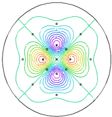

|
surface_fit |

  
|
|
surface_fit |
|
{ SURFACE_FIT.PDE
This problem illustrates the use of FlexPDE in a data fitting
application.
THE NUMERICAL SOLUTION OF THE BIHARMONIC EQUATION WITH A DISCONTINUOUS
LINEAR SOURCE TERM USING FlexPDE.
STATEMENT OF THE PROBLEM:
Find the solution U of the fourth order elliptic PDE
(dxx + dyy)(dxx + dyy) (U) = -beta*(U - C) in O, (1)
where in the usual FlexPDE notation, dxx indicates 2nd partial derivative
with respect to x, and where O is a given connected domain. Equation (1)
arises from the minimization of the strain energy function of a thin plate
which is constrained to nearly pass thru a given set of discrete set of
points specified by C and beta. Namely, a given set of n data values
[C(i)] is assigned at locations [(x(i), y(i))], i=1,..n ,
and the factor beta has its support only at the locations (x(i), y(i)).
Along with equation (1), we must prescribe a set of boundary conditions
involving U and its derivatives which must be satisfied everywhere on the
domain boundary.
}
title " The Biharmonic Equation in Surface Fitting Designs and Visualization"
select cubic
variables
U
V
definitions
eps = .001
beta0 = 1.e7
beta = 0.0
a = 1/sqrt(2.)
two = 2.5
b = two*a
xbox = array (0, 1, -1, 0, 0, a, -a, a, -a, two, -two, 0, 0, b, -b, b, -b )
ybox = array (0, 0, 0, 1, -1, a, -a, -a, a, 0, 0, two, -two, b, -b, -b, b )
xi = .05 eta = .05 r0 = x*x + y*y C = exp(-r0/1.)*sin(pi*((x^2-y^2)/64.))
initial values U = 0 V = .001
equations U: del2(U) = V V: del2(V) = -beta*(U-C)
boundaries region 1 start (-4,0) value(U) = C value(V) = 0. arc(center=0.,0.) angle -360 to close
region 2 beta = beta0 repeat i=1 to 17 start (xbox[i]-xi,ybox[i]-eta) line to (xbox[i]+xi,ybox[i]-eta) to (xbox[i]+xi,ybox[i]+eta) to (xbox[i]-xi,ybox[i]+eta) to close endrepeat |
 |
monitors
contour(U)
contour(C)
contour(C-U) as "Error C - U"
plots
contour (U) as "Potential"
surface(U) as "Potential"
surface(C) as " Expected Surface"
contour(beta)
surface(beta)
surface(U-C)
end